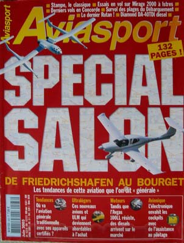
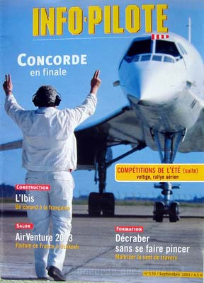
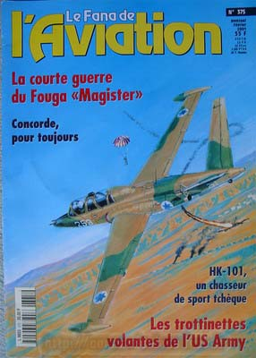
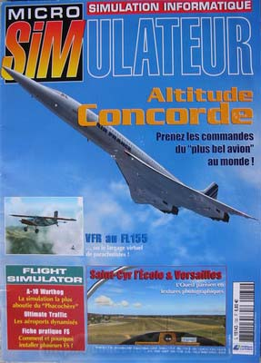
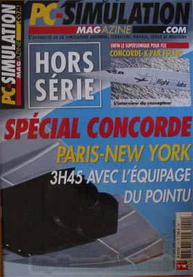
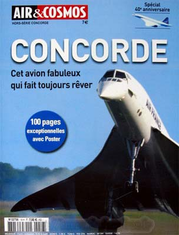
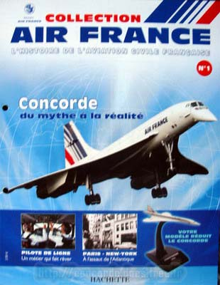
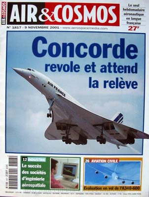
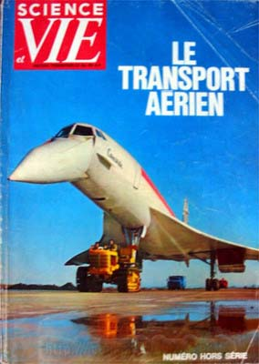
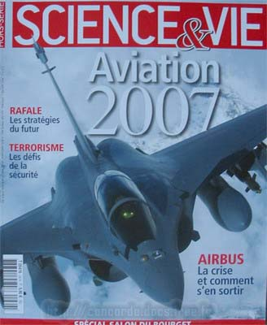

Voici des revues concernant Concorde :
Aviasport n°583 - Juin 2003 - 29x21 132p 

Revue avec un article relatant le dernier vol Concorde d'Air France.
Info Pilote n°570 - Septembre 2003 - 29x21 

Revue avec un article relatant un vol en Concorde depuis le poste d'observateur.
Le fana de l'aviation n°375 - Février 2001- 29x21

Revue avec les photos des différentes livrées. Intérêt limité.
Micro Simulateur n°130 - 29x21 

Revue avec un article sur le module de simulation Altitude Concorde.
PC-Simulation hors série - 2009 

Hors série spécial Concorde, avec de bons interviews.
Air & Cosmos hors série - 2009 - 96p 

Hors série spécial Concorde.
Collection Air France

Numéro spécial Concorde.
Air & Cosmos n°1817 - 2001 - 41p 

Un article sur Concorde.
Science et vie - Hors série n°83 - Le transport aérien - 1968 - 130p 

Avec 30 pages sur les vols supersoniques sur Concorde et Tupolev TU-144.
Science et vie hors série - 2007 - 130p 

Avec une interview remarquable d'André Turcat.
Aviation magazine International - 01 avr 1969 - 96p 

Avec un reportage complet sur le développement de Concorde et sur ses acteurs principaux.